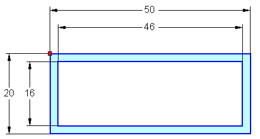

Activity: Creating a custom frame
Overview
In this activity, create a custom frame.
Create a custom frame using the dimensions shown.

Choose your own handle point and orientation line.
Save the custom frame as rectangle50x20x2.par.
Save the file in the Frames working folder.
-
When creating a custom frame, what is required to define the cross section?
-
If no snap is in the frame definition, where does the frame position on a path?
-
What is the advantage of creating a custom frame using a feature instead of a sketch cross section?
-
When the custom frame cross section is complete, how do you apply the frame attributes to create a new frame?
-
When creating a custom frame, what is required to define the cross section?
A complete cross section of component must reside in either the first feature or first sketch of a part file.
-
If no snap is in the frame definition, where does the frame position on a path?
The centroid of the cross section.
-
What is the advantage of creating a custom frame using a feature instead of a sketch cross section?
The frame component file does not have to contain a solid body of the feature. A sketch is enough to successfully create frames. However, it is a good idea to create the solid so the preview is available when selecting the frame component.
-
When the custom frame cross section is complete, how do you apply the frame attributes to create a new frame?
You must be in the profile or sketch environment of the user-defined cross section.
To apply frame attributes, click Applications→Run Macro.
In the Run Macro dialog, select the file FrameComponentsUtility.exe located in the Program Files/Solid Edge 2023Frames folder. Click Open.
The Frame utility location is →Program Files\Solid Edge 2023\Frames\Frame Component Utility.